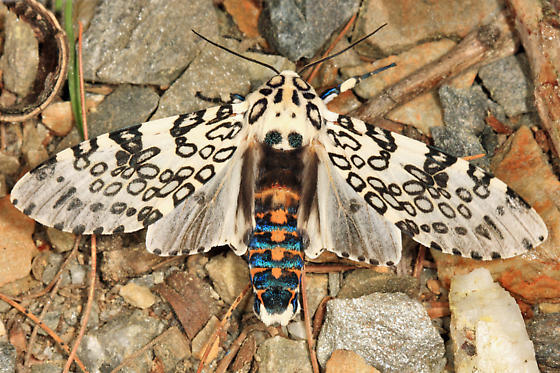

The giant leopard moth is a moth of the family Erebidae. They are distributed through North America from southern Ontario, and southern and eastern United States through New England, Mexico and south to Colombia. The obsolete name Ecpantheria scribonia is still occasionally encountered. The wings of this moth are bright white with a pattern of neat black blotches, some solid and some hollow. Adult moths are strictly nocturnal and do not generally fly before nightfall.
